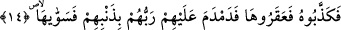
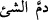
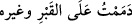
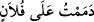

14. Ama onlar, onu yalanladılar ve deveyi kestiler. Bunun üzerine Rableri
günahları sebebiyle onlara büyük bir felâket gönderdi de hepsini helâk etti.
“Ama onlar onu” Allah’ın rasûlünü, “Onu bırakın Allah’ın arzında yesin içsin,
ona kötülük dokundurmayın, sonra sizi yakın bir azap yakalar’ (Hud, 11/64)
şeklindeki tehdidi konusunda “yalanladılar ve deveyi kestiler.” Aslında deveyi
Semûd’un en bedbahtı olan Kudâr kesti. Ancak onların hepsi bu bedbahtın fiiline razı
olduklarından ifâde çoğul olarak getirilmiştir.
Süheylî der ki: Deveyi kesen Kudâr b. Sâlif idi. Annesinin adı Kudeyre idi. Devenin
kesilmesinde kendisine ortak olan arkadaşı ise Mısda‘ b. Dehr veya İbn Cehm idi.
Âyette devenin kesilmesinden önce peygamberin yalanlandığından söz ediliyor. Çünkü
devenin kesilmesinin asıl sebebi onların Sâlih (a.s.)ı yalanlamaları idi.
Bir hadîste Hz. Peygamber (s.a.) Ali (r.a.)’a: “Ey Ali, geçmiş ümmetlerin en şakîsi
kimdir, bilir misin?” diye sordu. Hz. Ali: “Allah ve Rasûlü daha iyi bilir.” diye cevap
verdi. Hz. Peygamber (a.s.): “Allah’ın devesini kesendir.” buyurdu. Hz. Peygamber
(s.a.): “Sonra gelenlerin en şakîsi kimdir, bilir misin?” diye sordu. Hz. Ali: “Allah ve
Rasûlü daha iyi bilir.” dedi. Hz. Peygamber (s.a.): “Seni katledecek olan kimsedir.”
buyurdu.[116]
Bunun sebebi şudur: Âyette geçen deve ruh devesine işârettir. Ruh devesini nefsânî
zâlimlerle ve hayvâni şehvetlerle kesmek nefsin bedbahtlığının fazlalığından olduğu gibi
Hz. Ali’yi katletmek de aynen böyledir. Çünkü o Peygamberimiz’in (a.s.) rûhaniyetine
mazhardı. Bu nedenle hakîkat makamında onun en büyük vârisi oldu. Bu nedenle bir veli
olan Hz. Ali’ye el uzatmak Muhammed Nebî (a.s.)’a kasdetmek demektir. Küllî
rahmetin mazharı olan bir kimseye karşı gelmekten daha büyük bir bedbahtlık olur mu?
“Bunun üzerine Rableri” burada anlatılan “günahları sebebiyle onlara büyük bir
felâket gönderdi de hepsini helâk etti..” Yani Allah Teâlâ azabı onların üzerine kapattı,
bu korkunç bir sesti.
“Demdem” fiili, deve yağ ile her tarafından yağlandığında, yağ değmedik kuru yeri
kalmayacak biçimde yağ ile kuşatıldığında söylenen “Nakatü medmûme” teriminden
alınmadır. “
” bir şeyi kalayla örttü, kalayladı demektir. “
” kabrin
ve başka şeyin üzerini örttüm, mânâsınadır. Mübâlağa için kelimeye bir “dal” harfi daha
eklenmiştir.
Keşfü’l-esrâr’da der ki: Araplar “
” derler. Sonra fiile abartı katmak için
“
” derler. Ardından abartıyı daha da ileriye vardırmak için “
” derler. Âyette
geçen ifâde bir şeyin diğer bir şeyi her tarafından örtmesi, kaplaması demektir.
“Bi-zenbihim” ifâdesinin başındaki “bâ” harfi sebeb bildirmektedir. Yani günahları
sebebiyle, demektir. Âyetin başındaki “fâ” harfi buna işâret ettiği halde açıkça
“günahları sebebiyle” denilmesi, her günahkarın ibret alması için günahın âkıbetinden